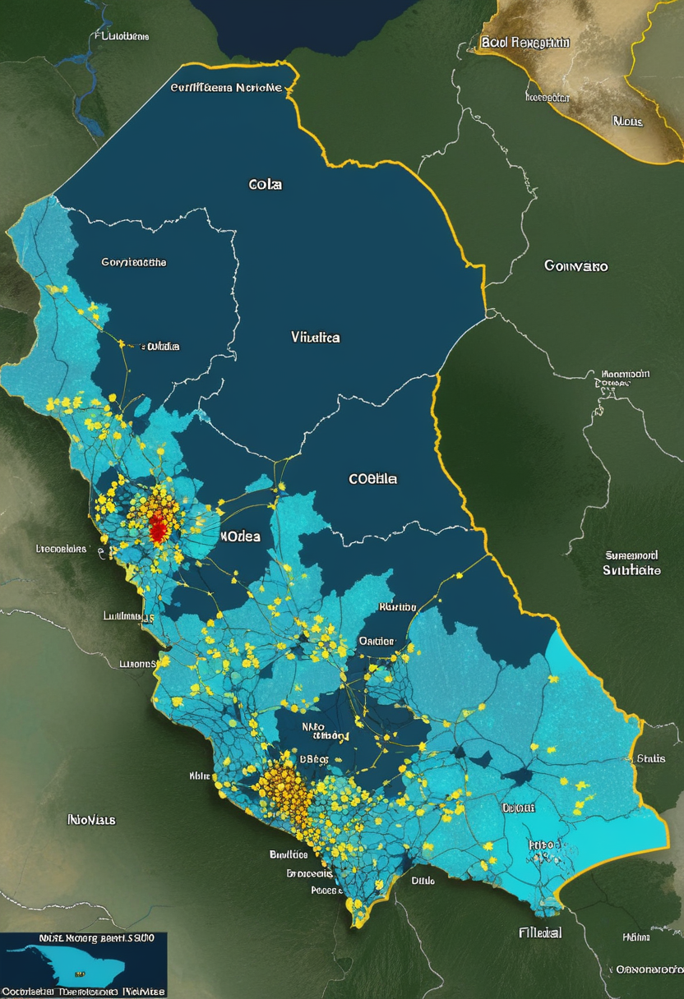
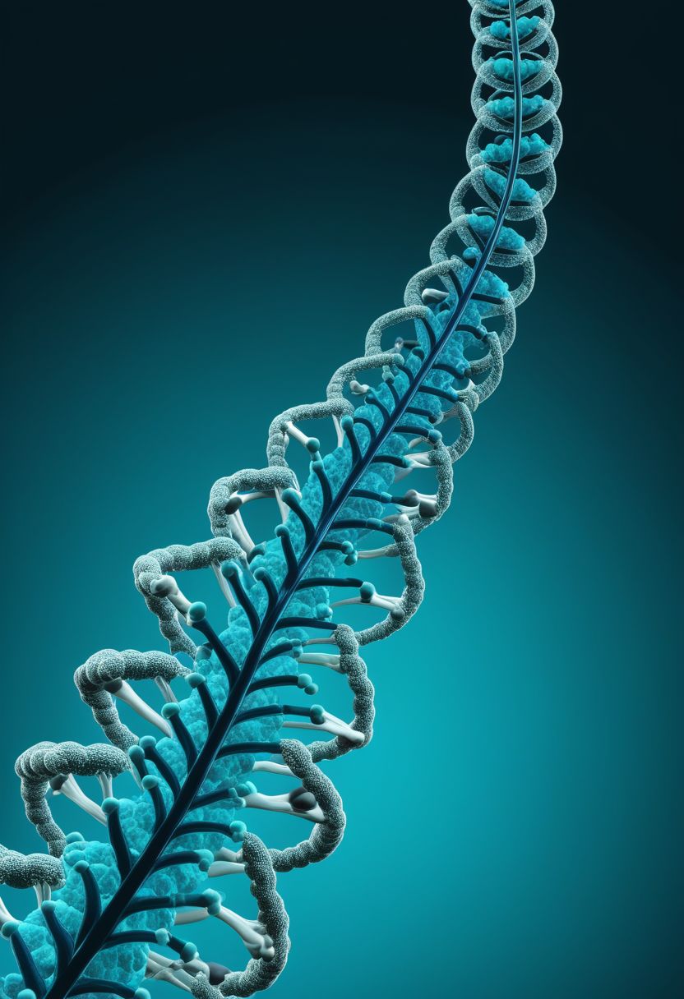
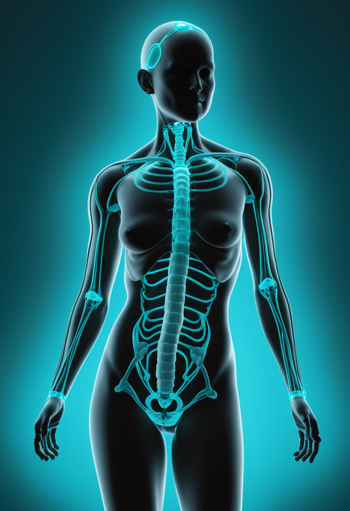
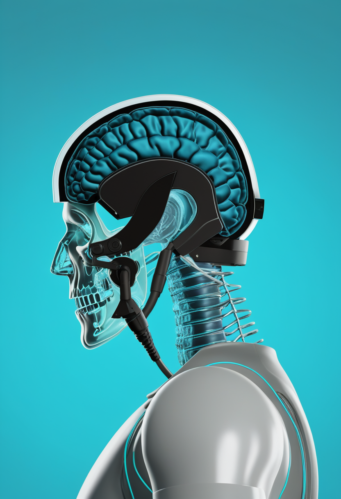
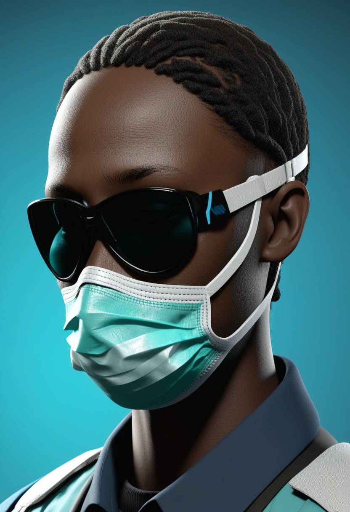
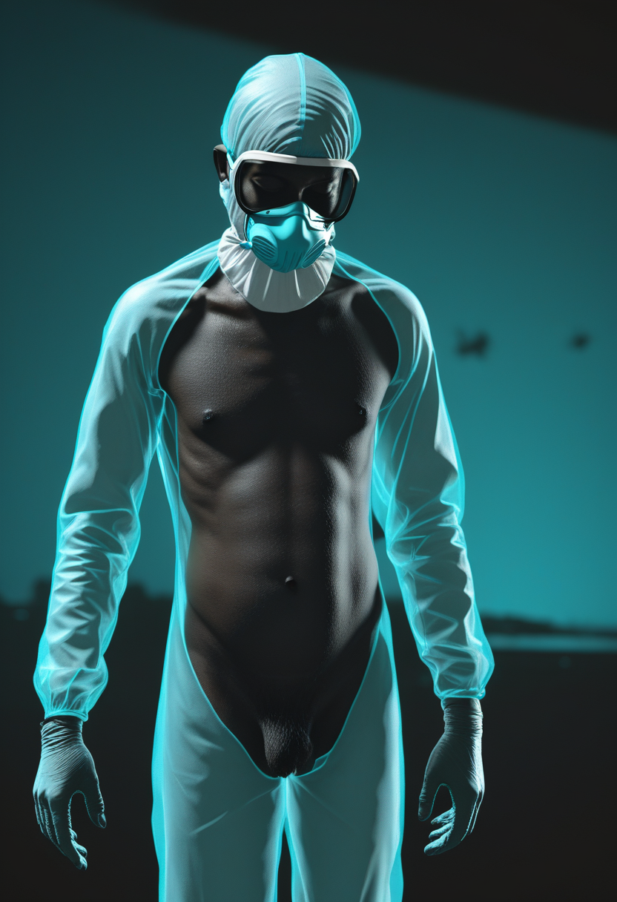
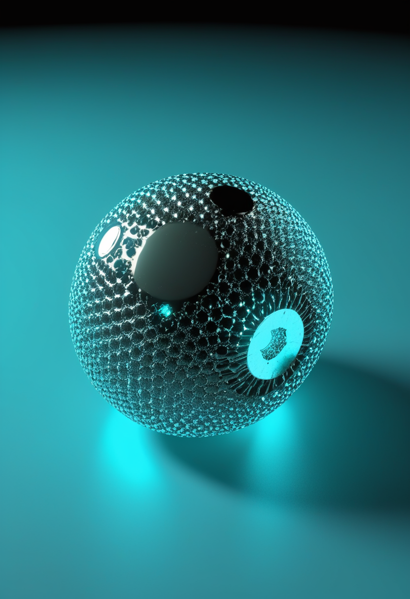

土曜日の便り。世界保健機関(WHO)は7月2日、ウガンダ西部チェゲグワ県でマールブルグウイルスの確定例を発表した。コンゴ民主共和国(DRC)のブンディブギョ型エボラが確定1,759例・死者600人(7/8時点)で公衆衛生上の緊急事態(PHEIC)下にある同じ地域圏で、致死率の高い2種のフィロウイルスが並行して検知される異例の事態となっている。交通の要衝キサンガニでも関連不明の疑い例が浮上し、4州目への飛び火が懸念されるが、接触者は経過観察下にあり症状発現者は今のところゼロ。BCIの世界ではSynchronが2026年のFDA承認第一号を目指すピボタル試験の準備を進め、Precision Neuroscienceの低侵襲BCIが4名の患者でリアルタイム神経制御を実証、Tobiiはウェブカムだけで使う視線計測ソフトを研究者向けに公開した。宇宙では欧州のユークリッド望遠鏡が宇宙誕生後わずか6.7億年の最古級クエーサー31個を発見し、ウィーン大学はマグノンの量子情報寿命を100倍に延ばして小型量子コンピュータへの道を開いた。SMAの世界ではアピテグロマブが臨床データを積み上げ、サラネルセンは新生児から成人まで3つの試験群で早期治療戦略の最適化を進めている。
WHOは7月2日、ウガンダ西部チェゲグワ県でマールブルグウイルス病の確定例を発表した。エボラ対応で強化されていたサーベイランス体制を通じて検知されたもので、接触者は経過観察下にあるが7月2日時点で症状発現者はゼロ、アフリカCDCも現時点で二次感染は確認されていないとしている。隣接するコンゴ民主共和国(DRC)では、ブンディブギョ型エボラが7月8日時点で確定1,759例・死者600人に達し、既に37保健地区・3州(イトゥリ、北キブ、南キブ)に拡大したまま公衆衛生上の緊急事態(PHEIC)が続いている。致死率の高い2種のフィロウイルスが同一地域圏で同時循環するという異例の事態に加え、交通の要衝キサンガニ(ツショパ州)で関連不明の疑い例も浮上しており、4州目への飛び火と市中未検知感染への懸念が強まっている。ワクチン・治療薬候補の治験は続いており、監視体制の強化がこの局面を左右する。

Scholar Rock社の抗体医薬アピテグロマブは、FDAが生物製剤承認申請(BLA)を受理し優先審査中で判定期日(PDUFA)は9月30日のまま。欧州でもEMAの販売承認(MAA)判断が2026年半ばに見込まれている。6月のCure SMA年次会議ではPhase 3 SAPPHIRE試験の追加解析が発表され、52週時点でHFMSEスコアが3点以上改善した患者の割合が投与群30.4%・プラセボ群12.5%と報告された(承認前の投与中データにつき数値は変更されうる)。

Biogenの次世代SMA治療薬候補サラネルセンのSTELLARプログラムは、無症候期の生後6週未満児を対象とするSTELLAR-1、15〜60歳を対象とするSOLAR、6週未満で遺伝子治療済みの乳児を対象とするSTELLAR-2(2026年6月組み入れ開始予定)の3試験で構成されることが明らかになった。サラネルセン単独・遺伝子治療単独・両者併用という早期治療戦略を、新生児から成人まで幅広い年齢層で比較する計画。
アピテグロマブは臨床データの厚みを、サラネルセンは対象年齢層の広がりを、それぞれ着実に積み上げている。二つの新薬候補は異なる角度からSMA治療の選択肢を広げつつある。
血管内ステント型BCI「Stentrode」を手がけるSynchronは、米国複数拠点での2026年ピボタル試験開始に向け準備を進めている。同社は既にFDAの治験機器適用免除(IDE)とブレークスルー・デバイス指定を取得済みで、可行性試験COMMANDでは一次安全エンドポイントを達成した。ピボタル試験成功後、市販前承認(PMA)申請へ進む計画。

低侵襲・硬膜下型の高解像度BCI「Layer 7 Cortical Interface」(最大1,024電極)を用い、ジョンズ・ホプキンス大の研究チームが4名の患者で2次元カーソル操作と音声分類のリアルタイム神経制御を報告した。開頭を伴わない設計が臨床応用のハードルを下げるとして注目される。2025年3月にFDA 510(k)クリアランス取得済みで、2026年1月時点の累計試験例数は68例超。
Tobiiは通常のウェブカメラを視線トラッカーに変える新ソフト「Webcam eye tracking for research」を発表した。専用ハードウェア不要で多様な参加者層への研究アクセスを広げる狙いで、施設内での対面研究向けローカル版も2026年内に追加予定。
血管内ステント型・低侵襲表面電極・非侵襲ウェブカムという三者三様のアプローチが、それぞれのフェーズで前進した一週間。BCIは埋込型から裾野の広い技術まで、多層的に進化を続けている。

WHOは7月2日、ウガンダ西部チェゲグワ県でマールブルグ病の確定例を発表した。エボラの強化サーベイランス活動を通じて検知されたもので、接触者は経過観察下にあるが7月2日時点で症状発現者はゼロ、アフリカCDCも現時点で二次感染は確認されていないとしている。エボラのPHEIC下にある同一地域圏で致死性フィロウイルスが並行して検知された形で、医療リソースの分散や接触者追跡の複雑化が懸念材料に。

DRCのブンディブギョ型エボラは7月8日発表時点で確定1,759例・死者600人と、7/10号既報の数値からほぼ横ばいで推移している。交通の要衝キサンガニ(ツショパ州)で浮上した関連不明の疑い例についても、7/9以降のWHO公式最新発表(DON-612は7/3付)が本号執筆時点で確認できておらず、4州目への確定可否は引き続き「要確認」の状態にある。
マールブルグの確定は、エボラ対応で強化された監視体制が機能した証でもある。接触者の症状発現ゼロという初期の落ち着きを保てるかが、今後の焦点となる。
ESAのユークリッド宇宙望遠鏡が、赤方偏移6.6〜7.8の範囲でクエーサー31個を新たに発見したと7月6日付Astronomy & Astrophysics誌に報告された。うち2天体は赤方偏移7.77・7.69と観測史上最遠を記録し、宇宙年齢がわずか約6.7億年(現在の5%)だった時代に輝いていたことになる。赤方偏移7以上のクエーサー既知数を倍増させる成果で、初期超巨大ブラックホール形成の理解に新知見をもたらす。
ウィーン大学の研究チームが、従来ごく短寿命とされてきた磁気の波「マグノン」の寿命を約18マイクロ秒(従来比約100倍)に延伸したと発表した(成果はScience Advances誌に掲載)。素材の純度が主な制約だったことが判明し、多数の量子ビットを繋ぐ「量子バス」として、コイン大の量子コンピュータ実現に道を開く可能性がある。

Aalto大学・Rice大学・プリンストン大学等の国際チームが、AIアルゴリズムが実験前に予測した新超伝導体イットリウム・ルテニウム・ホウ化物(YRu₃B₂)とルテチウム・ルテニウム・ホウ化物(LuRu₃B₂、いずれも1K未満で超伝導転移)を実証し、Physical Review Research誌に掲載された。2033年までの室温超伝導体発見を目標とする国際コンソーシアム「SuperC」の一環。
宇宙誕生初期のクエーサー、量子情報の長寿命化、AIが導いた新超伝導体 ― 見えない領域への理解が、異なる尺度で同時に深まっている。
2025年10月公表の包括評価「State of Brain Emulation Report」は、全脳エミュレーション(意識のデジタル転写)の実現を最短でも30〜40年先と結論づけている。Carboncopies Foundation創設者ランドル・コーエン氏も、AIアバターなど部分的模倣は進む一方、思考・記憶・主観的経験の全体を再現する完全な意識シミュレーションは依然投機的段階にあると2025年12月に認めている。
「Cognitive Digital Twins: Ethical Risks and Governance for AI Systems That Model the Mind」と題するプレプリントが、個人の認知・心理をモデル化するAIシステムに固有の倫理的リスクとガバナンスのあり方を論じている。AI意識・安全性を巡る議論と接続する内容で、査読誌への展開が今後の焦点。
意識のデジタル転写はなお30〜40年先という地に足のついた見通しが再確認される一方、心をモデル化する技術への倫理的な備えは、実装に先んじて動き出している。
2026年7月11日、エボラ流行地域にマールブルグウイルスという新たな影が加わった。だが接触者の症状発現はゼロ、二次感染も未確認という初期対応の落ち着きも同時に伝わってくる。同じ週、BCIの世界ではSynchronがFDA承認第一号を目指す最終段階へ、宇宙では最古級のクエーサー31個が姿を現し、量子技術は寿命100倍という地道な前進を重ねた。危機への警戒と、知の地平を押し広げる歩みが、今週もまた同じ朝に並んでいる。
では、また明日の朝に。 — JaH